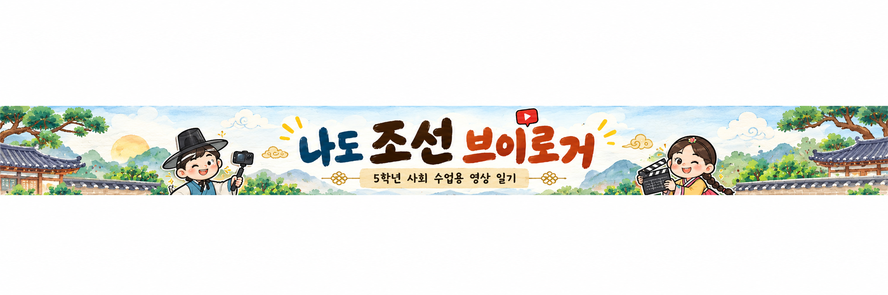

본문 바로가기

처음부터 다시 시작
🏛
작품관
탐구질문
오늘의 탐구질문
유교의 가르침이 퍼지면서
조선 사람들의 생활은 어떻게 달라졌을까?
탐구질문이 도착했어요.
가운데 족자를 눌러 확인하세요.
활동 시작
→
↺
처음부터 다시 시작할까요?
작성한 내용이 모두 지워집니다.
지운 내용은 다시 되돌릴 수 없어요.
취소
다시 시작
×
📌
우리 모둠 작품 공유하기
작품 제목
공유할 결과물을 선택하세요.
📜 일기
🎬 영상일기 스토리보드
✅ 우리 모둠 작품을 작품관에 등록했어요.
취소
우리 반 작품관에 공유하기